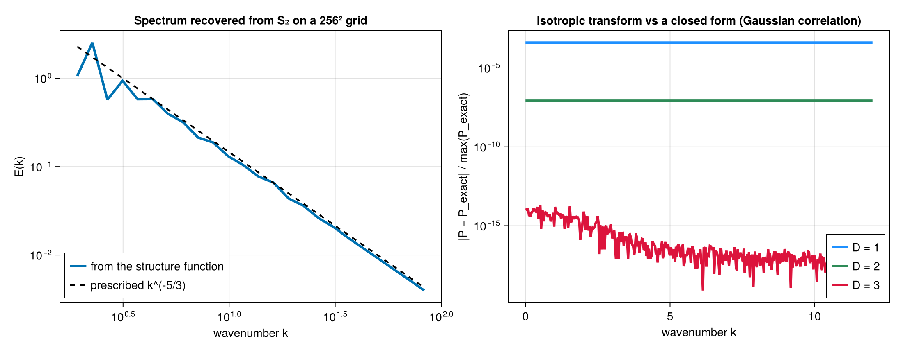
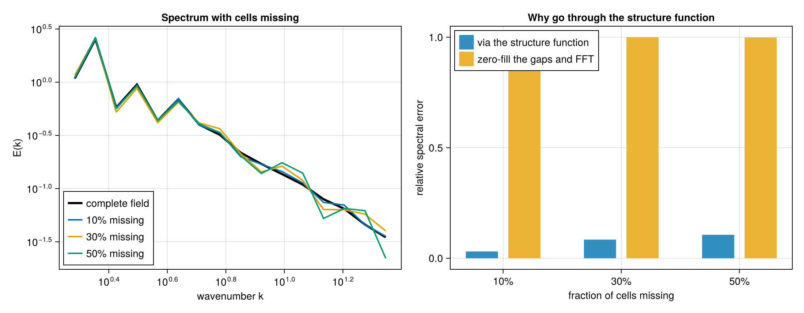
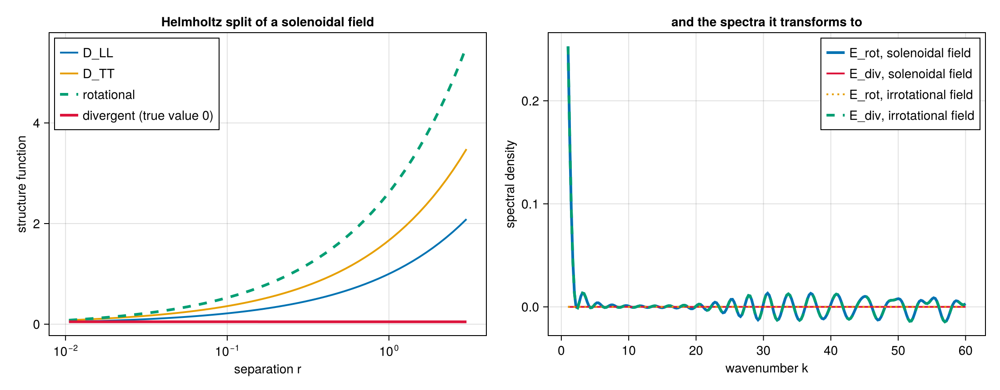

Walkthrough: from a velocity field to a cascade diagnostic
This page runs one analysis end to end — six structure-function invariants, the Helmholtz split, the directional signal, and the spectral slope — on fields whose answers are known in advance, so every number below can be checked rather than taken on faith.
Two acts, because the two data layouts want different algorithms. Scattered points go through the pair loop; a uniform grid goes through the transform, which is roughly two orders of magnitude faster and exact.
Act 1 — scattered points
A superposition of Fourier modes whose polarisations are perpendicular to their wavevectors is divergence-free by construction, so we know its divergent part is zero before computing anything.
using StructureFunctions: StructureFunctions as SF, Calculations as SFC,
StructureFunctionTypes as SFT
using ComputationalBackends: ComputationalBackends as CB
using StaticArrays: StaticArrays as SA
using Random
function solenoidal_field(x; kmin = 3, kmax = 40, seed = 42)
rng = Random.MersenneTwister(seed)
N = size(x, 2)
u = zeros(2, N)
for a in -kmax:kmax, b in -kmax:kmax
k = sqrt(a^2 + b^2)
(kmin <= k <= kmax && a > 0) || continue
amp = k^(-4 / 3) # gives an E(k) ~ k^(-5/3) shell energy
φ = 2π * rand(rng)
ex, ey = -b / k, a / k # perpendicular to k, hence divergence-free
for p in 1:N
c = amp * cos(a * x[1, p] + b * x[2, p] + φ)
u[1, p] += c * ex
u[2, p] += c * ey
end
end
return u
end
Random.seed!(9)
x = 2π .* rand(2, 6000)
u = solenoidal_field(x)Six invariants in one pass
The six second- and third-order invariants share a pair loop, a separation and a bin, so computing them together costs one pass rather than six.
bins = collect(10 .^ range(log10(0.05), log10(2.0); length = 25))
res = SFC.calculate_structure_functions_single_pass(x, u, bins; backend = CB.SerialBackend())
keys(res)
# (:S2, :L2, :T2, :S3, :L3, :L1T2, :helmholtz)That is 18.0 million pairs. Culling is on by default, so pairs beyond the last bin edge are never enumerated.
The Helmholtz split
The rotational and divergent parts of the second-order structure function come from the longitudinal and transverse components, and arrive with the single pass.
h = res.helmholtz
D_rot = h.rotational_sums ./ max.(h.rotational_counts, 1)
D_div = h.divergent_sums ./ max.(h.divergent_counts, 1)
occ = isfinite.(res.L2.values) .& (h.rotational_counts .> 0)
maximum(abs, D_div[occ]) / maximum(res.L2.values[occ]) # 0.1195
maximum(abs, (D_rot .+ D_div .- (res.L2.values .+ res.T2.values))[occ]) # 2.2e-16The field is solenoidal, so the true divergent part is zero and the residual 0.1195 is the decomposition's own quadrature floor. It comes from the integral's lower limit: the cumulative integral starts at the first bin's abscissa rather than at zero, and the omitted segment carries real weight when the integrand rises at small separation. Narrowing the first bin shrinks it — running the same field over log10(0.05) to log10(2.0) with a band of kmin = 4, kmax = 20 instead gives 0.0317.
The energy identity D_rot + D_div = D_LL + D_TT holds to 2.2e-16. Note that this identity is not a check on the split: it is preserved by a whole family of errors in it, including a factor-of-r defect this package once carried. See Validation.
Directional output
The second histogram axis can bin the angle between the separation and a reference direction instead of the operator's value, which turns S(r) into S(r, θ) without touching the kernel.
ua = zeros(2, size(x, 2))
ua[1, :] .= sin.(6 .* x[1, :]) # varies along x only
ang = collect(range(0, π; length = 5))
dj = collect(range(0.0, 1.2; length = 6))
j = SFC.serial_calculate_structure_function(
SFT.L2SFType(), x, ua, dj, ang;
second_axis = SFC.SeparationAngleAxis(SA.SVector(1.0, 0.0)),
verbose = false, show_progress = false)Averaged over separation, the four angular bins give
| θ | ⟨δu_L²⟩ |
|---|---|
| [0, π/4) | 0.806 |
| [π/4, π/2) | 0.250 |
| [π/2, 3π/4) | 0.252 |
| [3π/4, π) | 0.801 |
a 3.2× anisotropy, in the right sense: the field varies only along x, so separations aligned with x see the full increment. The perpendicular bin is not zero because it spans 45°–90°, and only exactly perpendicular separations have an identically zero increment.
The angle folds to [0, π) because swapping a pair's ends flips both the separation and the increment, and no structure function distinguishes the two.
The exact laws
The inertial-range laws are inversions of a measured moment. Each takes the specific moment it is stated for, and they are not interchangeable:
r = collect(range(0.2, 3.0; length = 8))
SF.KHM.epsilon_from_four_fifths(r, -(4 / 5) * 0.85 .* r)[1] # 0.850000Applied to this field, though, the answer is that there is nothing to recover: a synthetic Gaussian field has no energy cascade, so its third-order moments are consistent with zero (⟨δu_L³⟩ = 1.3e-2 against ⟨δu_L²⟩ ≈ 1, i.e. sampling noise). A meaningful ε needs data with a genuine flux — a forced simulation or an observational record.
Act 2 — a uniform grid
On a grid the same quantity is available by transform, exactly, for every lag at once.
using SpectralBackends: SpectralBackends as SB
using FFTW: FFTW
function spectral_field(n; kmin, kmax, seed = 5)
rng = Random.MersenneTwister(seed)
Fx = zeros(ComplexF64, n ÷ 2 + 1, n)
Fy = zeros(ComplexF64, n ÷ 2 + 1, n)
for ix in 1:(n ÷ 2 + 1), iy in 1:n
kx = ix - 1
ky = iy - 1 <= n ÷ 2 ? iy - 1 : iy - 1 - n
k = sqrt(kx^2 + ky^2)
(kmin <= k <= kmax) || continue
amp = k^(-4 / 3) * n^2
ph = exp(im * 2π * rand(rng))
Fx[ix, iy] = amp * ph * (-ky / k) # perpendicular to k, so k·û = 0
Fy[ix, iy] = amp * ph * (kx / k)
end
u = zeros(2, n, n)
u[1, :, :] .= FFTW.irfft(Fx, n)
u[2, :, :] .= FFTW.irfft(Fy, n)
return u
end
n = 256
dx = 2π / n
u = spectral_field(n; kmin = 2, kmax = 100)
bins = collect(10 .^ range(log10(1.5 * dx), log10(2.6); length = 33))
plan = SFC.squared_digitize_plan(bins)
sums = zeros(Float64, SFC.n_histogram_bins(plan))
counts = zeros(Int, length(sums))
sched = SFC.UniformLagSchedule((n, n), (dx, dx), (true, true))
SFC.gridded_sweep!(sums, counts, SFT.L2SFType(), u, sched, bins, Val(2),
SB.FastFourierTransformSpectralBackend())This bins 1.154 billion pairs. On eight dedicated cores the transform takes 0.014 s; the direct lag sweep over the identical configuration takes 1.767 s, a factor of 126, and the two agree to round-off. Passing SB.AutoSpectralBackend() costs both and picks the cheaper one, which is not always the transform — at small cutoffs the sweep wins.
The spectral slope
mids = SF.midpoints(bins)
D = sums ./ max.(counts, 1)
slope(i) = (log(D[i+1]) - log(D[i-1])) / (log(mids[i+1]) - log(mids[i-1]))| r | D_LL | local slope |
|---|---|---|
| 0.088 | 0.882 | 1.02 |
| 0.130 | 1.241 | 1.05 |
| 0.195 | 1.766 | 0.72 |
| 0.222 | 1.941 | 0.74 |
| 0.254 | 2.149 | 0.74 |
| 0.290 | 2.366 | 0.73 |
| 0.331 | 2.610 | 0.71 |
| 0.379 | 2.858 | 0.66 |
| 0.841 | 4.536 | 0.47 |
| 2.134 | 5.778 | 0.01 |
The three limbs are all physical: r² below the smallest excited eddy, a plateau near 2/3 across the excited band, and saturation at 0 beyond the largest. A prescribed E(k) ~ k^(-5/3) implies D_LL ~ r^(2/3), and the measured plateau sits at 0.71 ± 0.03 — the excess is the finite width of the band, which leaves the plateau squeezed between the two limbs rather than flat.
This is worth stating plainly, because it is the honest limit of the method: a scattered-point sample cannot show this at all. Its small-scale end is capped by the mean point spacing, so a one-decade band gives a slope that declines monotonically through 2/3 without ever plateauing, and fitting a single exponent to it returns whatever the fit window happens to select. Resolving a scaling range needs the dynamic range a grid provides.
Act 3 — into spectral space
A structure function and a spectrum carry the same second-order information, and the package converts between them. Which route to use depends on the data, and the difference is not cosmetic.
From a grid: exact
On a grid the transform runs over the whole lag space, so no direction is averaged over and no separation is binned.
using SpectralBackends: SpectralBackends as SB
using FFTW: FFTW
kaxes, density = SFC.gridded_spectrum(u, sched, Val(2),
SB.FastFourierTransformSpectralBackend())
edges = collect(10 .^ range(log10(1.0), log10(100.0); length = 25))
mids, E = SFC.shell_average(kaxes, density, edges)That takes 0.024 s on the 256² field, and the variance it implies matches the field's own to every digit printed — 5.63136 either way. The recovered spectrum has the slope it was built with:
| k | E(k) | local slope |
|---|---|---|
| 2.89 | 6.50e-01 | −2.02 |
| 5.13 | 3.40e-01 | −1.84 |
| 9.13 | 1.32e-01 | −1.65 |
| 16.23 | 6.06e-02 | −1.53 |
| 28.86 | 2.29e-02 | −1.60 |
| 51.33 | 8.87e-03 | −1.65 |

against the prescribed k^(-5/3) = k^(-1.667). Note this is the same information as Act 2's D_LL ~ r^0.71: the two routes are consistent statements about one field, and ζ and the spectral slope are related by E(k) ~ k^(-(ζ+1)).
The reason to reach a spectrum through the structure function — rather than just transforming the field — is missing data. With cells absent the field's own transform is meaningless, while the structure function is still an unbiased average over surviving pairs. Measured against the complete-field spectrum on a 48² grid:
| cells missing | via the structure function | zero-fill the gaps and FFT |
|---|---|---|
| 10 % | 0.015 | 0.191 |
| 30 % | 0.036 | 0.543 |
| 50 % | 0.041 | 0.769 |

From scattered points: isotropic, and one assumption
Scattered data has no lag grid, so the transform integrates against a dimension-appropriate kernel — cos on a line, J₀ on a plane, sin(x)/x in a volume — and averages over the directions of the separation:
using Bessels: Bessels # only the 2-D kernel needs it; 1-D and 3-D are elementary
kq = collect(range(1.0, 30.0; length = 200))
P = SFC.isotropic_spectrum(res.S2, kq, Val(2)) # res.S2 is the trace, from Act 1That assumes the pairs behind each bin sample direction uniformly. Scattered points do. A rectilinear grid does not — its separations are biased toward the lattice axes — which is why gridded data should take the lag-space route above rather than this one.
Splitting the spectrum
The Helmholtz decomposition from Act 1 transforms the same way, giving the rotational and divergent kinetic-energy spectra separately — the reason the package carries the decomposition at all:
spec = SFC.helmholtz_spectra(res.helmholtz, kq)
maximum(abs, spec.divergent) / maximum(abs, spec.rotational) # 0.0669The Act 1 field is solenoidal by construction, so its divergent spectrum should vanish; 6.7 % of the rotational is the decomposition's own quadrature floor carried through the transform.
Because D_rot + D_div = D_LL + D_TT exactly and the transform is linear, the two spectra sum to the spectrum of the trace — an identity that holds whatever the field is, and the one the tests assert.
